En este estudio se pretende definir distintos grupos de gravedad de glaucoma (estadíos de desarrollo de la enfermedad) en función del grosor de los anillos neuroretinianos, mediante la técnica de las \(k\)-medias.
A continuación se muestran varias propuestas de agrupación basadas en distintas combinaciones de las variables que miden el grosor de los anillos neuroretinianos (BMO, anillo 3.5, anillo 4.1 y anillo 4.7).
Para cada propuesta de agrupación se muestra la distribución de los grupos obtenidos tanto para enfermos solos como para enfermos y sanos y se evalúa la bondad del modelo de clasificación en esos grupos mediante análisis discriminante con validación cruzada.
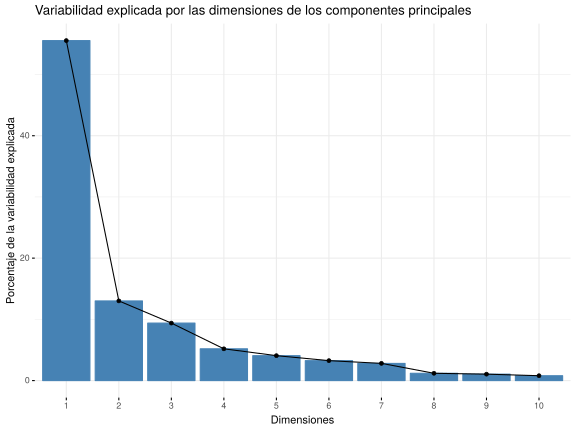
Se observa que la mayor parte de la variabilidad la explica la primera dimensión. Ello es debido a la alta correlación entre los sectores de los distintos anillos.
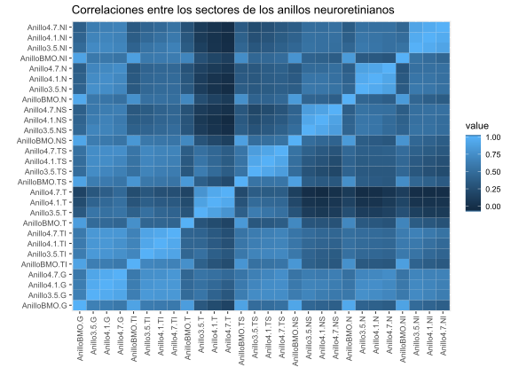
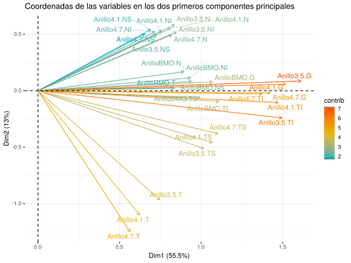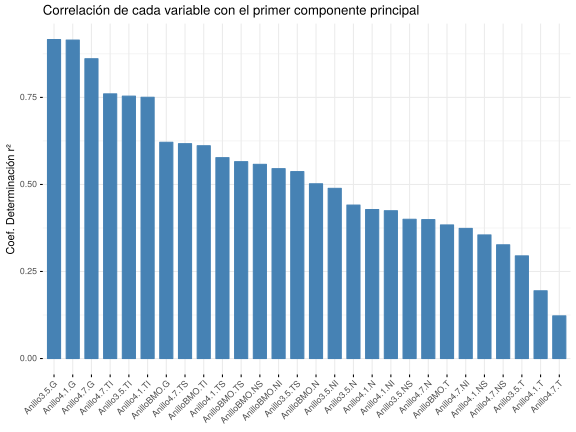
Se observa que los sectores que más peso tienen en el primer componente principal son el global y el temporal inferior de todos los anillos. Estas variables son precisamente las más correlacionadas entre si tal y como se aprecia en el siguente gráfico.
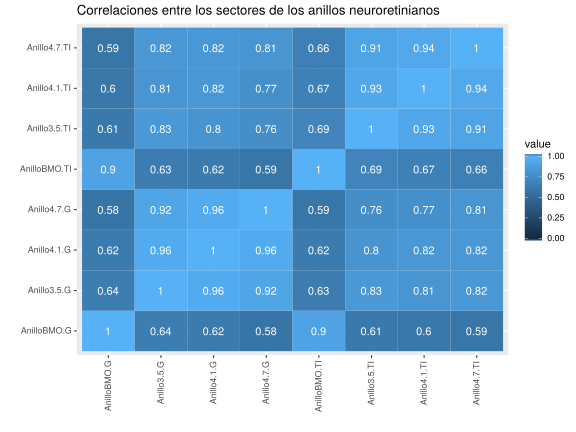
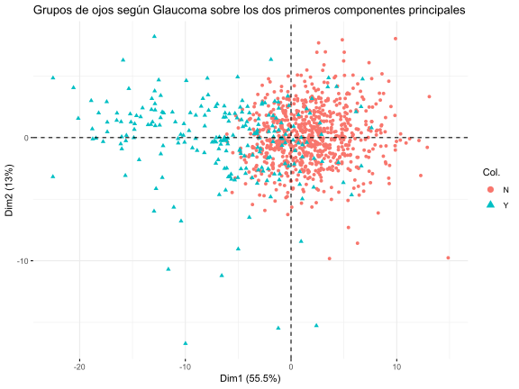
Como se observa los sanos y enfermos se separan bastante bien a lo largo del primer componente principal, aunque hay una zona de intersección donde se confunden. El segundo componente principal no ayuda en la separación de los grupos.
| N | Y | |
|---|---|---|
| N | 754 | 90 |
| Y | 10 | 135 |
| NA | NA | NA |
|---|---|---|
| NA | NA | NA |
El análisis discriminante lineal según los componentes prinicpales permite classificar correctamente el 90% de los ojos, con una sensibilidad del NA y una especificidad NA.
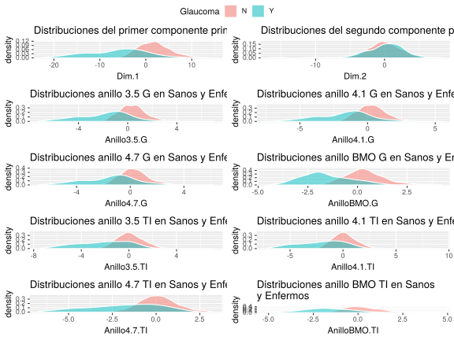
Así pues, a continuación se muestran distintos intentos de creación de grupos de estadio del glaucoma basados en los componentes principales y en distintas combinaciones de los sectores de los anillos, especialmente aquellos que tienen más importancia en el primer componente principal.
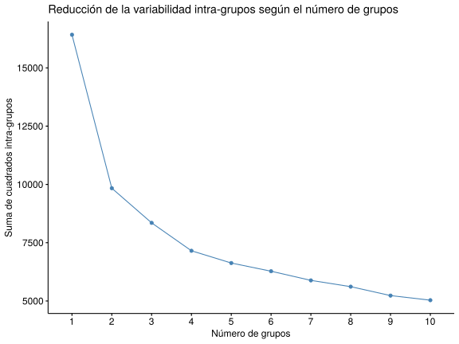
A la vista del gráfico se decide crear 4 clusters.
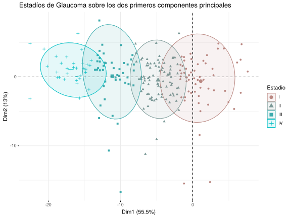
| Sano | I | II | III | IV | |
|---|---|---|---|---|---|
| Sano | 0 | 0 | 0 | 0 | 0 |
| I | 0 | 51 | 2 | 0 | 0 |
| II | 0 | 8 | 85 | 5 | 0 |
| III | 0 | 0 | 1 | 40 | 2 |
| IV | 0 | 0 | 0 | 0 | 31 |
| Sensibilidad | Especificidad | Precisión.Global | |
|---|---|---|---|
| Estadio I | 0.8644 | 0.988 | 0.9262 |
| Estadio II | 0.9659 | 0.9051 | 0.9355 |
| Estadio III | 0.8889 | 0.9833 | 0.9361 |
| Estadio IV | 0.9394 | 1 | 0.9697 |
Se observa que el 92% de los ojos están correctamente clasificados.
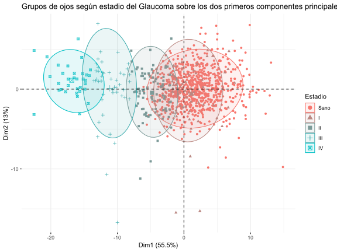
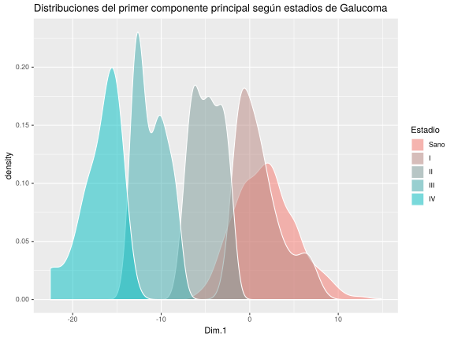
| Sano | I | II | III | IV | |
|---|---|---|---|---|---|
| Sano | 752 | 53 | 31 | 0 | 0 |
| I | 3 | 3 | 0 | 0 | 0 |
| II | 9 | 2 | 52 | 8 | 0 |
| III | 0 | 1 | 5 | 35 | 5 |
| IV | 0 | 0 | 0 | 2 | 28 |
| Sensibilidad | Especificidad | Precisión.Global | |
|---|---|---|---|
| Estadio Sano | 0.9843 | 0.6267 | 0.8055 |
| Estadio I | 0.05085 | 0.9968 | 0.5238 |
| Estadio II | 0.5909 | 0.9789 | 0.7849 |
| Estadio III | 0.7778 | 0.9883 | 0.8831 |
| Estadio IV | 0.8485 | 0.9979 | 0.9232 |
Se observa que el 87.97% de los ojos están correctamente clasificados. Como se puede ver, al incluir los ojos sanos en el modelo, la fiabilidad del modelo disminuye significativamente.
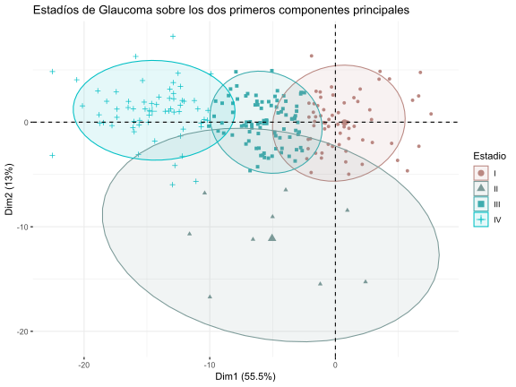
| Sano | I | II | III | IV | |
|---|---|---|---|---|---|
| Sano | 0 | 0 | 0 | 0 | 0 |
| I | 0 | 59 | 0 | 1 | 0 |
| II | 0 | 0 | 7 | 0 | 0 |
| III | 0 | 5 | 2 | 88 | 3 |
| IV | 0 | 0 | 0 | 0 | 60 |
| Sensibilidad | Especificidad | Precisión.Global | |
|---|---|---|---|
| Estadio I | 0.9219 | 0.9938 | 0.9578 |
| Estadio II | 0.7778 | 1 | 0.8889 |
| Estadio III | 0.9888 | 0.9265 | 0.9576 |
| Estadio IV | 0.9524 | 1 | 0.9762 |
Se observa que el 95.11% de los ojos están correctamente clasificados.
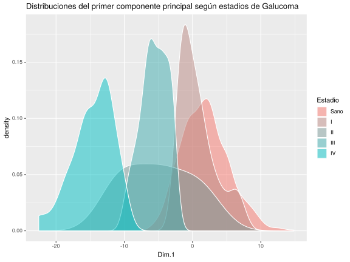
| Sano | I | II | III | IV | |
|---|---|---|---|---|---|
| Sano | 754 | 61 | 2 | 31 | 0 |
| I | 1 | 0 | 0 | 0 | 0 |
| II | 2 | 0 | 6 | 0 | 0 |
| III | 7 | 3 | 1 | 57 | 4 |
| IV | 0 | 0 | 0 | 1 | 59 |
| Sensibilidad | Especificidad | Precisión.Global | |
|---|---|---|---|
| Estadio Sano | 0.9869 | 0.5822 | 0.7846 |
| Estadio I | 0 | 0.9989 | 0.4995 |
| Estadio II | 0.6667 | 0.998 | 0.8323 |
| Estadio III | 0.6404 | 0.9833 | 0.8119 |
| Estadio IV | 0.9365 | 0.9989 | 0.9677 |
Se observa que el 88.57% de los ojos están correctamente clasificados. Como se puede ver, al incluir los ojos sanos en el modelo, la fiabilidad del modelo disminuye significativamente.
| Sano | I | II | III | IV | |
|---|---|---|---|---|---|
| Sano | 0 | 0 | 0 | 0 | 0 |
| I | 0 | 55 | 0 | 2 | 0 |
| II | 0 | 0 | 7 | 0 | 0 |
| III | 0 | 7 | 2 | 89 | 2 |
| IV | 0 | 0 | 0 | 0 | 61 |
| Sensibilidad | Especificidad | Precisión.Global | |
|---|---|---|---|
| Estadio I | 0.8871 | 0.9877 | 0.9374 |
| Estadio II | 0.7778 | 1 | 0.8889 |
| Estadio III | 0.978 | 0.9179 | 0.948 |
| Estadio IV | 0.9683 | 1 | 0.9841 |
Se observa que el 94.22% de los ojos están correctamente clasificados.
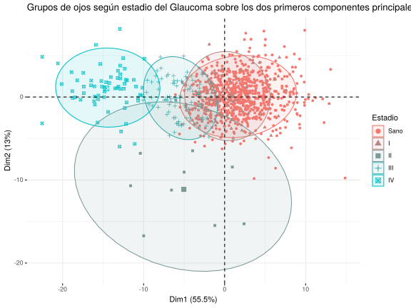
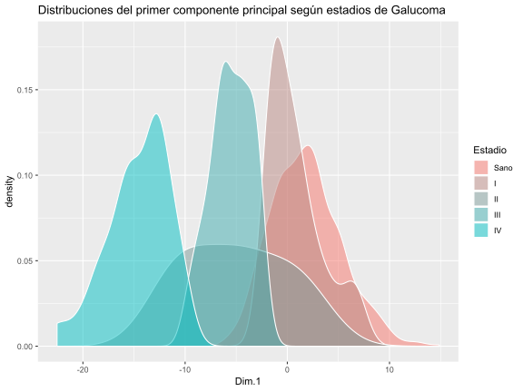
| Sano | I | II | III | IV | |
|---|---|---|---|---|---|
| Sano | 754 | 60 | 2 | 30 | 0 |
| I | 1 | 0 | 0 | 0 | 0 |
| II | 2 | 0 | 6 | 0 | 0 |
| III | 7 | 2 | 1 | 60 | 4 |
| IV | 0 | 0 | 0 | 1 | 59 |
| Sensibilidad | Especificidad | Precisión.Global | |
|---|---|---|---|
| Estadio Sano | 0.9869 | 0.5911 | 0.789 |
| Estadio I | 0 | 0.9989 | 0.4995 |
| Estadio II | 0.6667 | 0.998 | 0.8323 |
| Estadio III | 0.6593 | 0.9844 | 0.8219 |
| Estadio IV | 0.9365 | 0.9989 | 0.9677 |
Se observa que el 88.88% de los ojos están correctamente clasificados. Como se puede ver, al incluir los ojos sanos en el modelo, la fiabilidad del modelo disminuye significativamente.
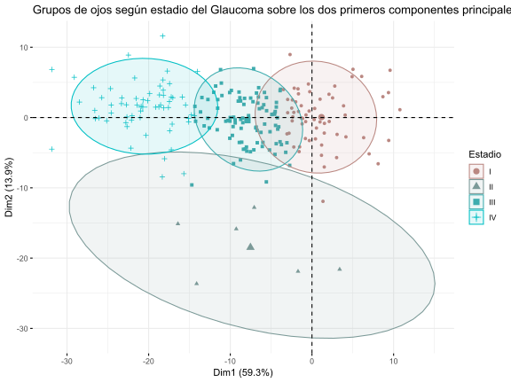
| Sano | I | II | III | IV | |
|---|---|---|---|---|---|
| Sano | 0 | 0 | 0 | 0 | 0 |
| I | 0 | 57 | 0 | 3 | 0 |
| II | 0 | 0 | 6 | 0 | 0 |
| III | 0 | 6 | 0 | 91 | 3 |
| IV | 0 | 0 | 0 | 0 | 59 |
| Sensibilidad | Especificidad | Precisión.Global | |
|---|---|---|---|
| Estadio I | 0.9048 | 0.9815 | 0.9431 |
| Estadio II | 1 | 1 | 1 |
| Estadio III | 0.9681 | 0.9313 | 0.9497 |
| Estadio IV | 0.9516 | 1 | 0.9758 |
Se observa que el 94.67% de los ojos están correctamente clasificados.
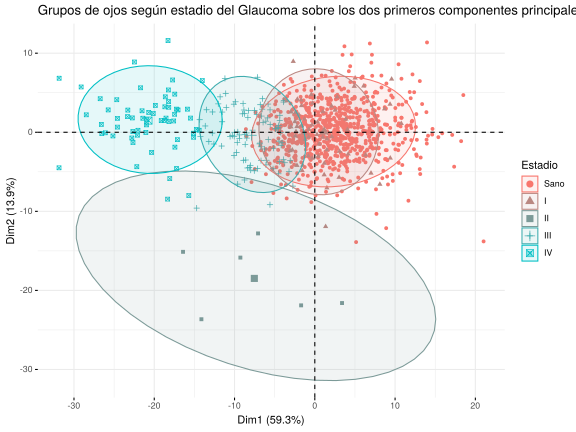
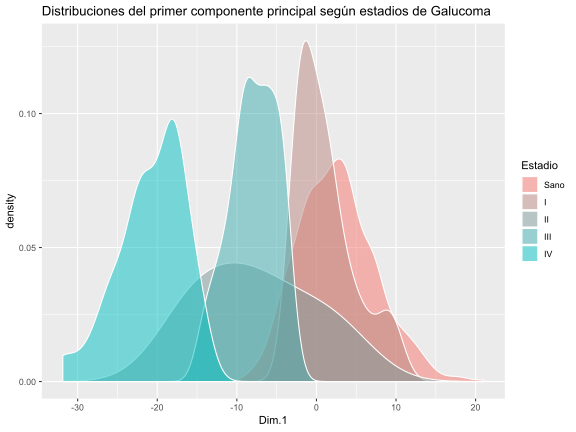
| Sano | I | II | III | IV | |
|---|---|---|---|---|---|
| Sano | 754 | 60 | 1 | 30 | 0 |
| I | 1 | 0 | 0 | 0 | 0 |
| II | 2 | 0 | 5 | 0 | 0 |
| III | 7 | 3 | 0 | 62 | 4 |
| IV | 0 | 0 | 0 | 2 | 58 |
| Sensibilidad | Especificidad | Precisión.Global | |
|---|---|---|---|
| Estadio Sano | 0.9869 | 0.5956 | 0.7912 |
| Estadio I | 0 | 0.9989 | 0.4995 |
| Estadio II | 0.8333 | 0.998 | 0.9156 |
| Estadio III | 0.6596 | 0.9844 | 0.822 |
| Estadio IV | 0.9355 | 0.9978 | 0.9667 |
Se observa que el 88.88% de los ojos están correctamente clasificados. Como se puede ver, al incluir los ojos sanos en el modelo, la fiabilidad del modelo disminuye significativamente.
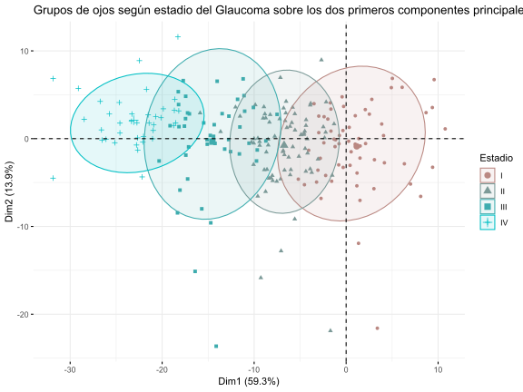
| Sano | I | II | III | IV | |
|---|---|---|---|---|---|
| Sano | 0 | 0 | 0 | 0 | 0 |
| I | 0 | 55 | 2 | 0 | 0 |
| II | 0 | 7 | 76 | 4 | 0 |
| III | 0 | 0 | 2 | 40 | 2 |
| IV | 0 | 0 | 0 | 1 | 36 |
| Sensibilidad | Especificidad | Precisión.Global | |
|---|---|---|---|
| Estadio I | 0.8871 | 0.9877 | 0.9374 |
| Estadio II | 0.95 | 0.9241 | 0.9371 |
| Estadio III | 0.8889 | 0.9778 | 0.9333 |
| Estadio IV | 0.9474 | 0.9947 | 0.971 |
Se observa que el 92% de los ojos están correctamente clasificados.
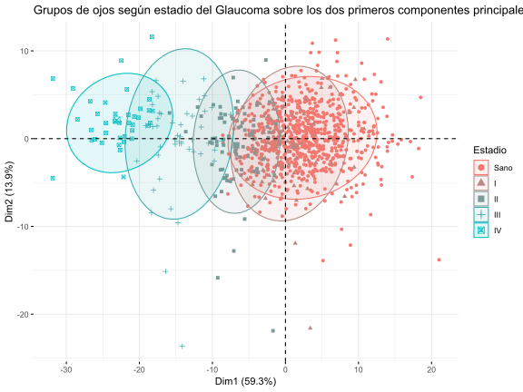
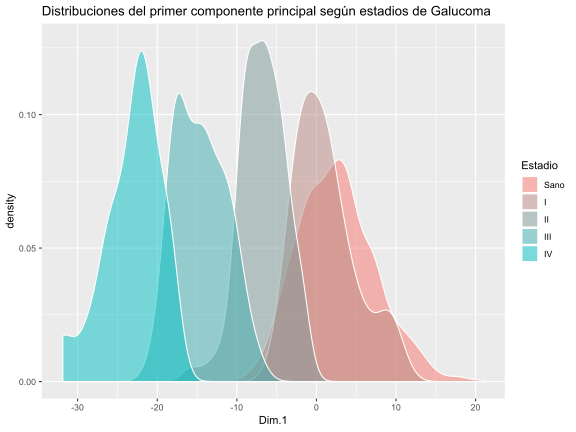
| Sano | I | II | III | IV | |
|---|---|---|---|---|---|
| Sano | 756 | 57 | 35 | 0 | 0 |
| I | 1 | 1 | 0 | 0 | 0 |
| II | 7 | 4 | 41 | 7 | 0 |
| III | 0 | 0 | 4 | 32 | 0 |
| IV | 0 | 0 | 0 | 6 | 38 |
| Sensibilidad | Especificidad | Precisión.Global | |
|---|---|---|---|
| Estadio Sano | 0.9895 | 0.5911 | 0.7903 |
| Estadio I | 0.01613 | 0.9989 | 0.5075 |
| Estadio II | 0.5125 | 0.9802 | 0.7463 |
| Estadio III | 0.7111 | 0.9958 | 0.8534 |
| Estadio IV | 1 | 0.9937 | 0.9968 |
Se observa que el 87.77% de los ojos están correctamente clasificados. Como se puede ver, al incluir los ojos sanos en el modelo, la fiabilidad del modelo disminuye significativamente.
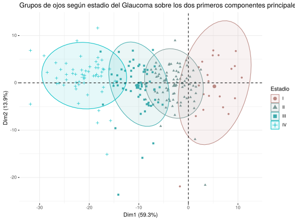
| Sano | I | II | III | IV | |
|---|---|---|---|---|---|
| Sano | 0 | 0 | 0 | 0 | 0 |
| I | 0 | 16 | 0 | 0 | 0 |
| II | 0 | 5 | 79 | 5 | 0 |
| III | 0 | 0 | 2 | 59 | 2 |
| IV | 0 | 0 | 0 | 2 | 55 |
| Sensibilidad | Especificidad | Precisión.Global | |
|---|---|---|---|
| Estadio I | 0.7619 | 1 | 0.881 |
| Estadio II | 0.9753 | 0.9306 | 0.9529 |
| Estadio III | 0.8939 | 0.9748 | 0.9344 |
| Estadio IV | 0.9649 | 0.9881 | 0.9765 |
Se observa que el 92.89% de los ojos están correctamente clasificados.
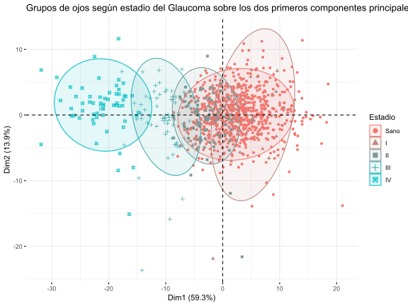
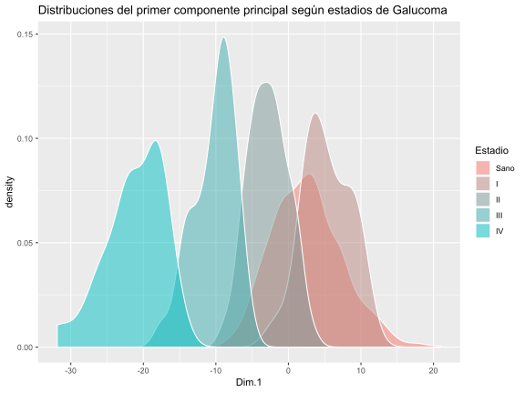
| Sector | Estadio | Media | Desviación.Típica | Lím.inf.IC | Lím.sup.IC |
|---|---|---|---|---|---|
| AnilloBMO.G | Sano | 0.3819 | 1.031 | 0.3087 | 0.4551 |
| AnilloBMO.G | I | -0.2609 | 0.9774 | -0.7059 | 0.184 |
| AnilloBMO.G | II | -0.9849 | 1.019 | -1.21 | -0.7597 |
| AnilloBMO.G | III | -1.934 | 0.852 | -2.143 | -1.724 |
| AnilloBMO.G | IV | -2.597 | 0.8763 | -2.829 | -2.364 |
| Anillo3.5.G | Sano | 0.4013 | 1.135 | 0.3207 | 0.4819 |
| Anillo3.5.G | I | 1.286 | 0.779 | 0.9315 | 1.641 |
| Anillo3.5.G | II | -0.5395 | 0.5449 | -0.66 | -0.4191 |
| Anillo3.5.G | III | -2.082 | 0.6949 | -2.252 | -1.911 |
| Anillo3.5.G | IV | -4.674 | 0.9835 | -4.935 | -4.413 |
| Anillo4.1.G | Sano | 0.3151 | 1.081 | 0.2384 | 0.3919 |
| Anillo4.1.G | I | 1.484 | 0.6237 | 1.2 | 1.767 |
| Anillo4.1.G | II | -0.54 | 0.5102 | -0.6529 | -0.4272 |
| Anillo4.1.G | III | -1.937 | 0.5429 | -2.071 | -1.804 |
| Anillo4.1.G | IV | -4.444 | 1.001 | -4.709 | -4.178 |
| Anillo4.7.G | Sano | 0.2876 | 1.075 | 0.2113 | 0.3639 |
| Anillo4.7.G | I | 1.574 | 0.8924 | 1.168 | 1.98 |
| Anillo4.7.G | II | -0.3585 | 0.672 | -0.5071 | -0.2099 |
| Anillo4.7.G | III | -1.671 | 0.8868 | -1.889 | -1.453 |
| Anillo4.7.G | IV | -4.163 | 1.039 | -4.438 | -3.887 |
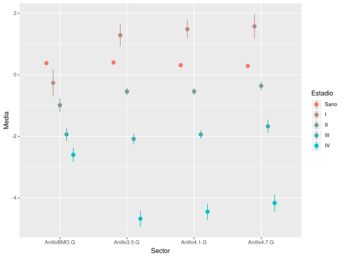
| Sano | I | II | III | IV | |
|---|---|---|---|---|---|
| Sano | 753 | 19 | 61 | 13 | 0 |
| I | 4 | 1 | 0 | 0 | 0 |
| II | 5 | 0 | 13 | 4 | 0 |
| III | 2 | 1 | 7 | 48 | 4 |
| IV | 0 | 0 | 0 | 1 | 53 |
| Sensibilidad | Especificidad | Precisión.Global | |
|---|---|---|---|
| Estadio Sano | 0.9856 | 0.5867 | 0.7861 |
| Estadio I | 0.04762 | 0.9959 | 0.5217 |
| Estadio II | 0.1605 | 0.9901 | 0.5753 |
| Estadio III | 0.7273 | 0.9848 | 0.8561 |
| Estadio IV | 0.9298 | 0.9989 | 0.9644 |
Se observa que el 87.77% de los ojos están correctamente clasificados. Como se puede ver, al incluir los ojos sanos en el modelo, la fiabilidad del modelo disminuye significativamente.
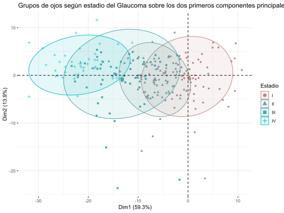
| Sano | I | II | III | IV | |
|---|---|---|---|---|---|
| Sano | 0 | 0 | 0 | 0 | 0 |
| I | 0 | 61 | 3 | 0 | 0 |
| II | 0 | 7 | 54 | 7 | 0 |
| III | 0 | 0 | 4 | 45 | 6 |
| IV | 0 | 0 | 0 | 3 | 35 |
| Sensibilidad | Especificidad | Precisión.Global | |
|---|---|---|---|
| Estadio I | 0.8971 | 0.9809 | 0.939 |
| Estadio II | 0.8852 | 0.9146 | 0.8999 |
| Estadio III | 0.8182 | 0.9412 | 0.8797 |
| Estadio IV | 0.8537 | 0.9837 | 0.9187 |
Se observa que el 86.67% de los ojos están correctamente clasificados.
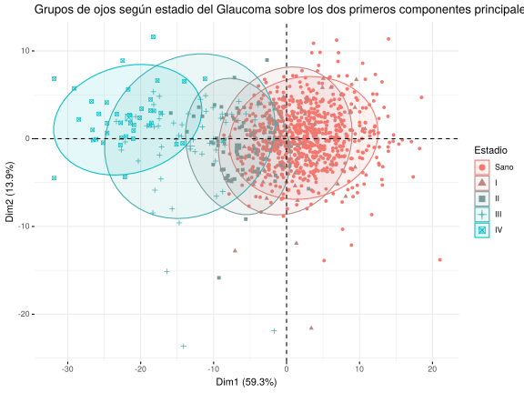
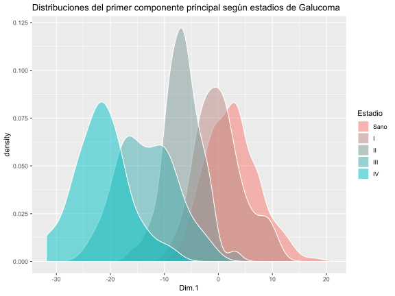
| Sano | I | II | III | IV | |
|---|---|---|---|---|---|
| Sano | 756 | 63 | 31 | 4 | 0 |
| I | 1 | 2 | 0 | 0 | 0 |
| II | 6 | 3 | 20 | 10 | 0 |
| III | 1 | 0 | 10 | 34 | 4 |
| IV | 0 | 0 | 0 | 7 | 37 |
| Sensibilidad | Especificidad | Precisión.Global | |
|---|---|---|---|
| Estadio Sano | 0.9895 | 0.5644 | 0.777 |
| Estadio I | 0.02941 | 0.9989 | 0.5142 |
| Estadio II | 0.3279 | 0.9795 | 0.6537 |
| Estadio III | 0.6182 | 0.9839 | 0.8011 |
| Estadio IV | 0.9024 | 0.9926 | 0.9475 |
Se observa que el 85.84% de los ojos están correctamente clasificados. Como se puede ver, al incluir los ojos sanos en el modelo, la fiabilidad del modelo disminuye significativamente.
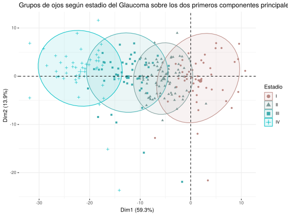
| Sano | I | II | III | IV | |
|---|---|---|---|---|---|
| Sano | 0 | 0 | 0 | 0 | 0 |
| I | 0 | 43 | 1 | 0 | 0 |
| II | 0 | 6 | 70 | 8 | 0 |
| III | 0 | 0 | 6 | 41 | 5 |
| IV | 0 | 0 | 0 | 2 | 43 |
| Sensibilidad | Especificidad | Precisión.Global | |
|---|---|---|---|
| Estadio I | 0.8776 | 0.9943 | 0.9359 |
| Estadio II | 0.9091 | 0.9054 | 0.9072 |
| Estadio III | 0.8039 | 0.9368 | 0.8704 |
| Estadio IV | 0.8958 | 0.9887 | 0.9423 |
Se observa que el 87.56% de los ojos están correctamente clasificados.
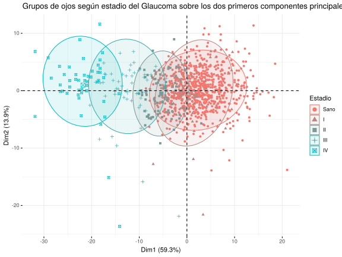
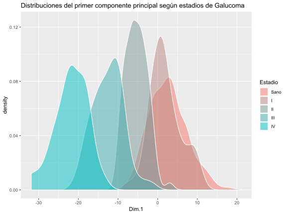
| Sector | Estadio | Media | Desviación.Típica | Lím.inf.IC | Lím.sup.IC |
|---|---|---|---|---|---|
| AnilloBMO.G | Sano | 0.3819 | 1.031 | 0.3087 | 0.4551 |
| AnilloBMO.G | I | -0.03561 | 0.7494 | -0.2509 | 0.1796 |
| AnilloBMO.G | II | -1.582 | 0.6994 | -1.741 | -1.423 |
| AnilloBMO.G | III | -2.097 | 0.7211 | -2.3 | -1.895 |
| AnilloBMO.G | IV | -2.717 | 0.9457 | -2.991 | -2.442 |
| AnilloBMO.TI | Sano | 0.2865 | 1.044 | 0.2124 | 0.3607 |
| AnilloBMO.TI | I | 0.05862 | 0.7818 | -0.1659 | 0.2832 |
| AnilloBMO.TI | II | -1.501 | 0.5811 | -1.633 | -1.369 |
| AnilloBMO.TI | III | -2.399 | 0.764 | -2.614 | -2.184 |
| AnilloBMO.TI | IV | -3.301 | 1.032 | -3.6 | -3.001 |
| Anillo3.5.G | Sano | 0.4013 | 1.135 | 0.3207 | 0.4819 |
| Anillo3.5.G | I | 0.2016 | 1.255 | -0.159 | 0.5621 |
| Anillo3.5.G | II | -0.9219 | 0.7186 | -1.085 | -0.7588 |
| Anillo3.5.G | III | -2.518 | 0.9566 | -2.787 | -2.249 |
| Anillo3.5.G | IV | -4.813 | 1.012 | -5.106 | -4.519 |
| Anillo3.5.TI | Sano | 0.1194 | 1.14 | 0.0384 | 0.2003 |
| Anillo3.5.TI | I | 0.2816 | 0.7065 | 0.0787 | 0.4845 |
| Anillo3.5.TI | II | -1.151 | 0.8741 | -1.35 | -0.9527 |
| Anillo3.5.TI | III | -3.171 | 0.846 | -3.409 | -2.933 |
| Anillo3.5.TI | IV | -5.241 | 0.9124 | -5.506 | -4.976 |
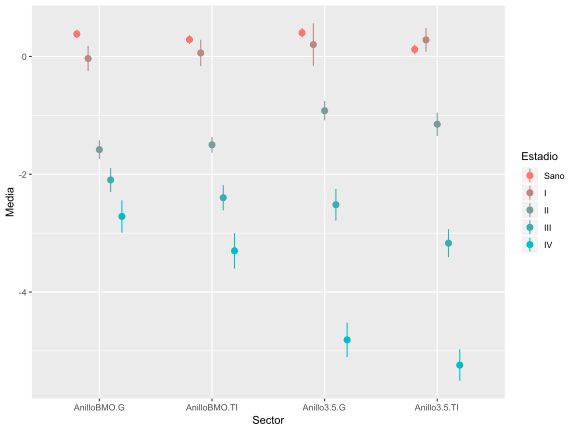
| Sano | I | II | III | IV | |
|---|---|---|---|---|---|
| Sano | 756 | 47 | 39 | 0 | 0 |
| I | 1 | 1 | 0 | 0 | 0 |
| II | 7 | 1 | 30 | 11 | 0 |
| III | 0 | 0 | 8 | 36 | 4 |
| IV | 0 | 0 | 0 | 4 | 44 |
| Sensibilidad | Especificidad | Precisión.Global | |
|---|---|---|---|
| Estadio Sano | 0.9895 | 0.6178 | 0.8037 |
| Estadio I | 0.02041 | 0.9989 | 0.5097 |
| Estadio II | 0.3896 | 0.9792 | 0.6844 |
| Estadio III | 0.7059 | 0.9872 | 0.8465 |
| Estadio IV | 0.9167 | 0.9957 | 0.9562 |
Se observa que el 87.66% de los ojos están correctamente clasificados. Como se puede ver, al incluir los ojos sanos en el modelo, la fiabilidad del modelo disminuye significativamente.
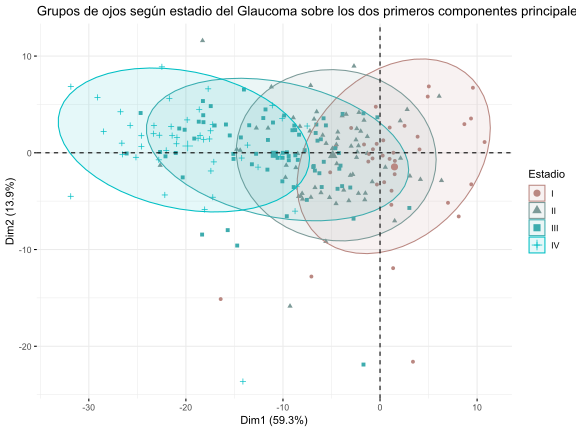
| Sano | I | II | III | IV | |
|---|---|---|---|---|---|
| Sano | 0 | 0 | 0 | 0 | 0 |
| I | 0 | 34 | 3 | 0 | 0 |
| II | 0 | 3 | 59 | 4 | 0 |
| III | 0 | 0 | 5 | 64 | 8 |
| IV | 0 | 0 | 0 | 7 | 38 |
| Sensibilidad | Especificidad | Precisión.Global | |
|---|---|---|---|
| Estadio I | 0.9189 | 0.984 | 0.9515 |
| Estadio II | 0.8806 | 0.9557 | 0.9181 |
| Estadio III | 0.8533 | 0.9133 | 0.8833 |
| Estadio IV | 0.8261 | 0.9609 | 0.8935 |
Se observa que el 86.67% de los ojos están correctamente clasificados.
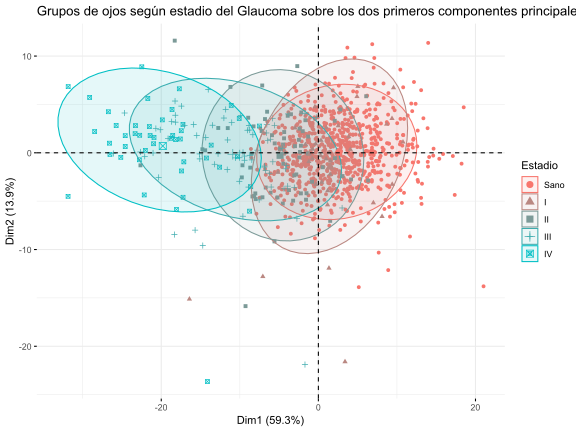
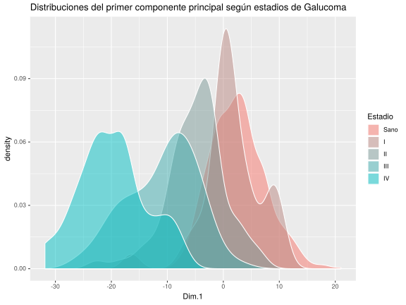
| Sano | I | II | III | IV | |
|---|---|---|---|---|---|
| Sano | 756 | 33 | 46 | 11 | 0 |
| I | 2 | 2 | 0 | 0 | 0 |
| II | 4 | 1 | 5 | 5 | 0 |
| III | 2 | 1 | 13 | 43 | 12 |
| IV | 0 | 0 | 3 | 16 | 34 |
| Sensibilidad | Especificidad | Precisión.Global | |
|---|---|---|---|
| Estadio Sano | 0.9895 | 0.6 | 0.7948 |
| Estadio I | 0.05405 | 0.9979 | 0.526 |
| Estadio II | 0.07463 | 0.9892 | 0.5319 |
| Estadio III | 0.5733 | 0.9694 | 0.7713 |
| Estadio IV | 0.7391 | 0.9799 | 0.8595 |
Se observa que el 84.93% de los ojos están correctamente clasificados. Como se puede ver, al incluir los ojos sanos en el modelo, la fiabilidad del modelo disminuye significativamente.
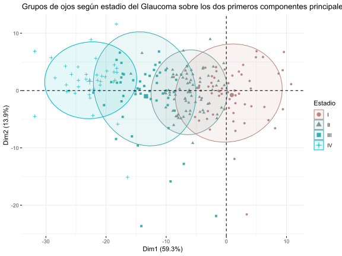
| Sano | I | II | III | IV | |
|---|---|---|---|---|---|
| Sano | 0 | 0 | 0 | 0 | 0 |
| I | 0 | 54 | 4 | 0 | 0 |
| II | 0 | 7 | 65 | 8 | 0 |
| III | 0 | 0 | 2 | 41 | 2 |
| IV | 0 | 0 | 0 | 4 | 38 |
| Sensibilidad | Especificidad | Precisión.Global | |
|---|---|---|---|
| Estadio I | 0.8852 | 0.9756 | 0.9304 |
| Estadio II | 0.9155 | 0.9026 | 0.909 |
| Estadio III | 0.7736 | 0.9767 | 0.8752 |
| Estadio IV | 0.95 | 0.9784 | 0.9642 |
Se observa que el 88% de los ojos están correctamente clasificados.
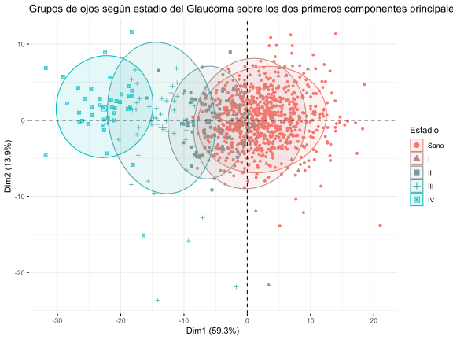
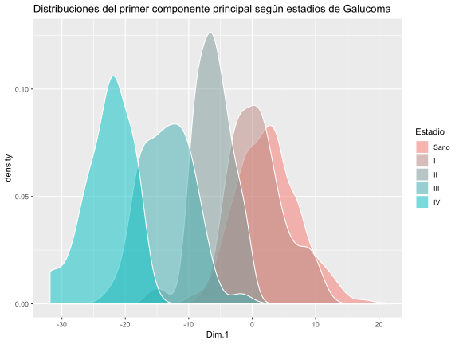
| Sano | I | II | III | IV | |
|---|---|---|---|---|---|
| Sano | 756 | 58 | 33 | 1 | 0 |
| I | 1 | 2 | 1 | 0 | 0 |
| II | 7 | 1 | 29 | 10 | 0 |
| III | 0 | 0 | 8 | 34 | 2 |
| IV | 0 | 0 | 0 | 8 | 38 |
| Sensibilidad | Especificidad | Precisión.Global | |
|---|---|---|---|
| Estadio Sano | 0.9895 | 0.5911 | 0.7903 |
| Estadio I | 0.03279 | 0.9978 | 0.5153 |
| Estadio II | 0.4085 | 0.9804 | 0.6944 |
| Estadio III | 0.6415 | 0.9893 | 0.8154 |
| Estadio IV | 0.95 | 0.9916 | 0.9708 |
Se observa que el 86.86% de los ojos están correctamente clasificados. Como se puede ver, al incluir los ojos sanos en el modelo, la fiabilidad del modelo disminuye significativamente.
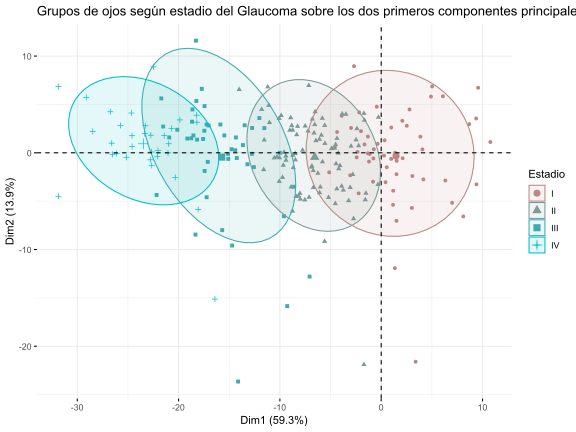
| Sano | I | II | III | IV | |
|---|---|---|---|---|---|
| Sano | 0 | 0 | 0 | 0 | 0 |
| I | 0 | 50 | 2 | 0 | 0 |
| II | 0 | 6 | 86 | 8 | 0 |
| III | 0 | 0 | 2 | 37 | 6 |
| IV | 0 | 0 | 0 | 2 | 26 |
| Sensibilidad | Especificidad | Precisión.Global | |
|---|---|---|---|
| Estadio I | 0.8929 | 0.9882 | 0.9405 |
| Estadio II | 0.9556 | 0.8963 | 0.9259 |
| Estadio III | 0.7872 | 0.9551 | 0.8711 |
| Estadio IV | 0.8125 | 0.9896 | 0.9011 |
Se observa que el 88.44% de los ojos están correctamente clasificados.
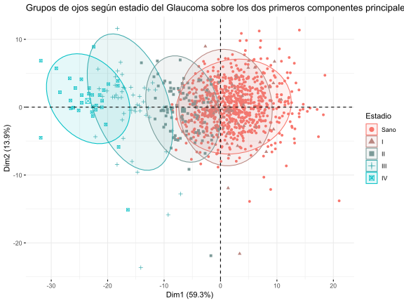
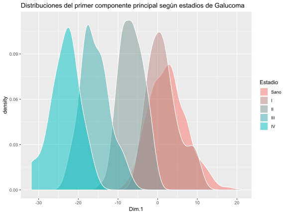
| Sano | I | II | III | IV | |
|---|---|---|---|---|---|
| Sano | 754 | 54 | 32 | 1 | 0 |
| I | 1 | 0 | 0 | 0 | 0 |
| II | 9 | 2 | 50 | 8 | 0 |
| III | 0 | 0 | 8 | 34 | 8 |
| IV | 0 | 0 | 0 | 4 | 24 |
| Sensibilidad | Especificidad | Precisión.Global | |
|---|---|---|---|
| Estadio Sano | 0.9869 | 0.6133 | 0.8001 |
| Estadio I | 0 | 0.9989 | 0.4995 |
| Estadio II | 0.5556 | 0.9789 | 0.7672 |
| Estadio III | 0.7234 | 0.983 | 0.8532 |
| Estadio IV | 0.75 | 0.9958 | 0.8729 |
Se observa que el 87.16% de los ojos están correctamente clasificados. Como se puede ver, al incluir los ojos sanos en el modelo, la fiabilidad del modelo disminuye significativamente.
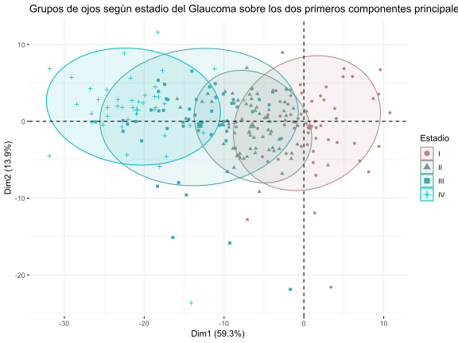
| Sano | I | II | III | IV | |
|---|---|---|---|---|---|
| Sano | 0 | 0 | 0 | 0 | 0 |
| I | 0 | 52 | 5 | 0 | 0 |
| II | 0 | 9 | 56 | 8 | 0 |
| III | 0 | 0 | 6 | 38 | 7 |
| IV | 0 | 0 | 0 | 7 | 37 |
| Sensibilidad | Especificidad | Precisión.Global | |
|---|---|---|---|
| Estadio I | 0.8525 | 0.9695 | 0.911 |
| Estadio II | 0.8358 | 0.8924 | 0.8641 |
| Estadio III | 0.717 | 0.9244 | 0.8207 |
| Estadio IV | 0.8409 | 0.9613 | 0.9011 |
Se observa que el 81.33% de los ojos están correctamente clasificados.
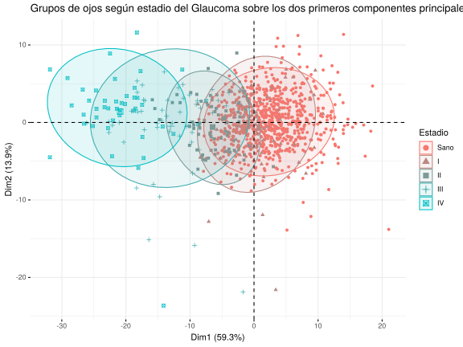
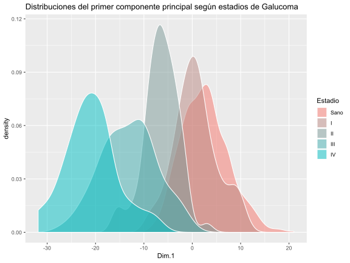
| Sano | I | II | III | IV | |
|---|---|---|---|---|---|
| Sano | 756 | 57 | 32 | 3 | 0 |
| I | 1 | 1 | 0 | 0 | 0 |
| II | 6 | 2 | 27 | 10 | 1 |
| III | 1 | 1 | 8 | 31 | 9 |
| IV | 0 | 0 | 0 | 9 | 34 |
| Sensibilidad | Especificidad | Precisión.Global | |
|---|---|---|---|
| Estadio Sano | 0.9895 | 0.5911 | 0.7903 |
| Estadio I | 0.01639 | 0.9989 | 0.5077 |
| Estadio II | 0.403 | 0.9794 | 0.6912 |
| Estadio III | 0.5849 | 0.9797 | 0.7823 |
| Estadio IV | 0.7727 | 0.9905 | 0.8816 |
Se observa que el 85.84% de los ojos están correctamente clasificados. Como se puede ver, al incluir los ojos sanos en el modelo, la fiabilidad del modelo disminuye significativamente.
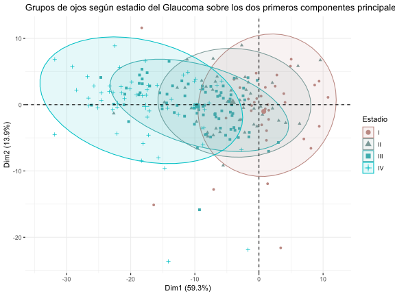
| Sano | I | II | III | IV | |
|---|---|---|---|---|---|
| Sano | 0 | 0 | 0 | 0 | 0 |
| I | 0 | 34 | 1 | 0 | 0 |
| II | 0 | 2 | 42 | 0 | 0 |
| III | 0 | 0 | 4 | 82 | 8 |
| IV | 0 | 0 | 0 | 2 | 50 |
| Sensibilidad | Especificidad | Precisión.Global | |
|---|---|---|---|
| Estadio I | 0.9444 | 0.9947 | 0.9696 |
| Estadio II | 0.8936 | 0.9888 | 0.9412 |
| Estadio III | 0.9762 | 0.9149 | 0.9455 |
| Estadio IV | 0.8621 | 0.988 | 0.925 |
Se observa que el 92.44% de los ojos están correctamente clasificados.
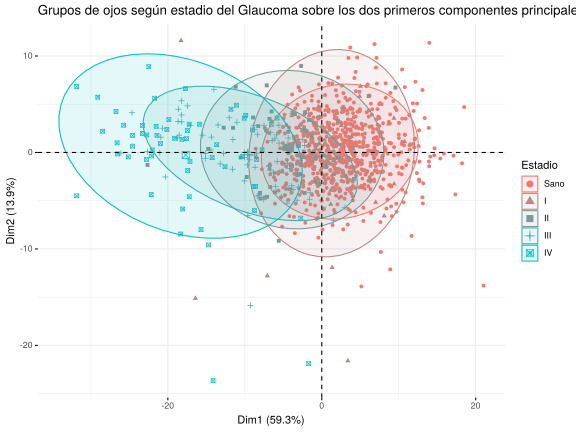
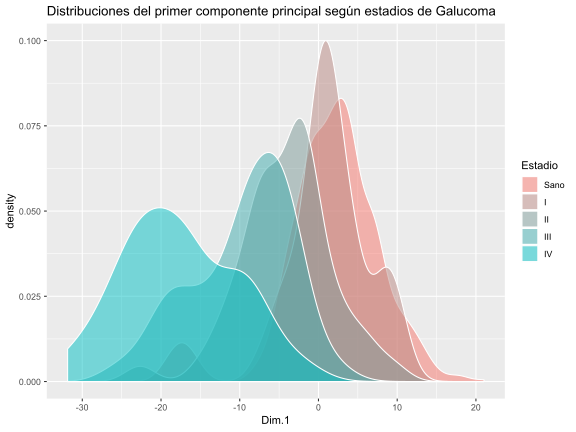
| Sano | I | II | III | IV | |
|---|---|---|---|---|---|
| Sano | 757 | 32 | 36 | 24 | 0 |
| I | 1 | 2 | 0 | 0 | 0 |
| II | 2 | 0 | 2 | 1 | 0 |
| III | 4 | 0 | 8 | 41 | 18 |
| IV | 0 | 2 | 1 | 18 | 40 |
| Sensibilidad | Especificidad | Precisión.Global | |
|---|---|---|---|
| Estadio Sano | 0.9908 | 0.5911 | 0.791 |
| Estadio I | 0.05556 | 0.999 | 0.5273 |
| Estadio II | 0.04255 | 0.9968 | 0.5197 |
| Estadio III | 0.4881 | 0.9669 | 0.7275 |
| Estadio IV | 0.6897 | 0.9774 | 0.8335 |
Se observa que el 85.14% de los ojos están correctamente clasificados. Como se puede ver, al incluir los ojos sanos en el modelo, la fiabilidad del modelo disminuye significativamente.
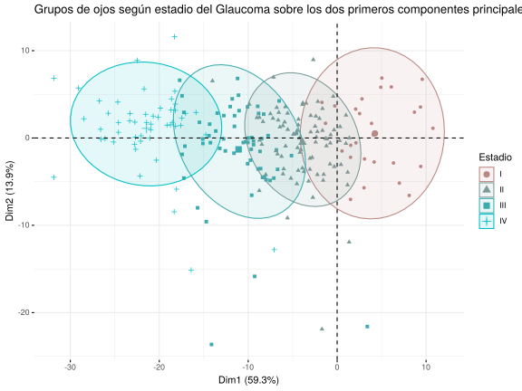
| Sano | I | II | III | IV | |
|---|---|---|---|---|---|
| Sano | 0 | 0 | 0 | 0 | 0 |
| I | 0 | 21 | 0 | 0 | 0 |
| II | 0 | 6 | 80 | 13 | 0 |
| III | 0 | 0 | 6 | 44 | 3 |
| IV | 0 | 0 | 0 | 3 | 49 |
| Sensibilidad | Especificidad | Precisión.Global | |
|---|---|---|---|
| Estadio I | 0.7778 | 1 | 0.8889 |
| Estadio II | 0.9302 | 0.8633 | 0.8968 |
| Estadio III | 0.7333 | 0.9455 | 0.8394 |
| Estadio IV | 0.9423 | 0.9827 | 0.9625 |
Se observa que el 86.22% de los ojos están correctamente clasificados.
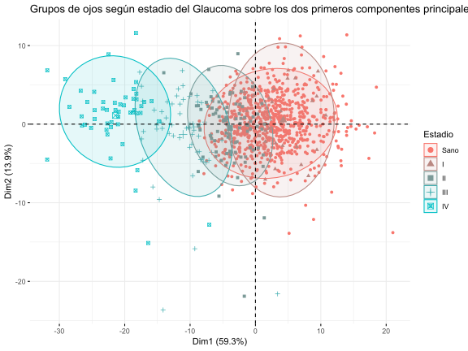
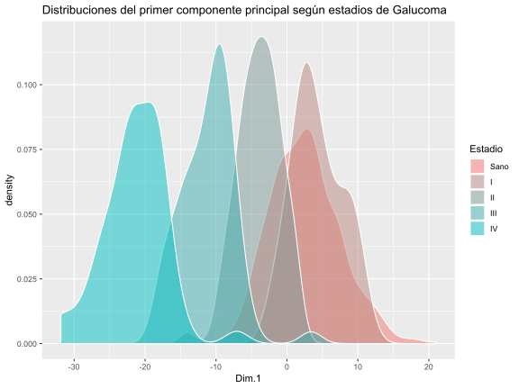
| Sano | I | II | III | IV | |
|---|---|---|---|---|---|
| Sano | 753 | 26 | 60 | 5 | 0 |
| I | 3 | 0 | 0 | 0 | 0 |
| II | 6 | 1 | 18 | 16 | 0 |
| III | 2 | 0 | 8 | 36 | 2 |
| IV | 0 | 0 | 0 | 3 | 50 |
| Sensibilidad | Especificidad | Precisión.Global | |
|---|---|---|---|
| Estadio Sano | 0.9856 | 0.5956 | 0.7906 |
| Estadio I | 0 | 0.9969 | 0.4984 |
| Estadio II | 0.2093 | 0.9745 | 0.5919 |
| Estadio III | 0.6 | 0.9871 | 0.7935 |
| Estadio IV | 0.9615 | 0.9968 | 0.9792 |
Se observa que el 86.65% de los ojos están correctamente clasificados. Como se puede ver, al incluir los ojos sanos en el modelo, la fiabilidad del modelo disminuye significativamente.
| Sano | I | II | III | IV | |
|---|---|---|---|---|---|
| Sano | 0 | 0 | 0 | 0 | 0 |
| I | 0 | 26 | 9 | 0 | 0 |
| II | 0 | 9 | 54 | 17 | 0 |
| III | 0 | 0 | 12 | 55 | 11 |
| IV | 0 | 0 | 0 | 7 | 25 |
| Sensibilidad | Especificidad | Precisión.Global | |
|---|---|---|---|
| Estadio I | 0.7429 | 0.9526 | 0.8477 |
| Estadio II | 0.72 | 0.8267 | 0.7733 |
| Estadio III | 0.6962 | 0.8425 | 0.7693 |
| Estadio IV | 0.6944 | 0.963 | 0.8287 |
Se observa que el 71.11% de los ojos están correctamente clasificados.
| Sano | I | II | III | IV | |
|---|---|---|---|---|---|
| Sano | 755 | 30 | 51 | 10 | 0 |
| I | 2 | 2 | 0 | 0 | 0 |
| II | 7 | 1 | 11 | 11 | 0 |
| III | 0 | 2 | 11 | 46 | 11 |
| IV | 0 | 0 | 2 | 12 | 25 |
| Sensibilidad | Especificidad | Precisión.Global | |
|---|---|---|---|
| Estadio Sano | 0.9882 | 0.5956 | 0.7919 |
| Estadio I | 0.05714 | 0.9979 | 0.5275 |
| Estadio II | 0.1467 | 0.9792 | 0.5629 |
| Estadio III | 0.5823 | 0.9736 | 0.778 |
| Estadio IV | 0.6944 | 0.9853 | 0.8399 |
Se observa que el 84.83% de los ojos están correctamente clasificados. Como se puede ver, al incluir los ojos sanos en el modelo, la fiabilidad del modelo disminuye significativamente.
| Sano | I | II | III | IV | |
|---|---|---|---|---|---|
| Sano | 0 | 0 | 0 | 0 | 0 |
| I | 0 | 58 | 5 | 0 | 0 |
| II | 0 | 8 | 50 | 9 | 0 |
| III | 0 | 0 | 7 | 37 | 7 |
| IV | 0 | 0 | 0 | 6 | 38 |
| Sensibilidad | Especificidad | Precisión.Global | |
|---|---|---|---|
| Estadio I | 0.8788 | 0.9686 | 0.9237 |
| Estadio II | 0.8065 | 0.8957 | 0.8511 |
| Estadio III | 0.7115 | 0.9191 | 0.8153 |
| Estadio IV | 0.8444 | 0.9667 | 0.9056 |
Se observa que el 81.33% de los ojos están correctamente clasificados.
| Sano | I | II | III | IV | |
|---|---|---|---|---|---|
| Sano | 756 | 60 | 31 | 5 | 0 |
| I | 1 | 3 | 1 | 0 | 0 |
| II | 6 | 3 | 20 | 10 | 0 |
| III | 1 | 0 | 10 | 29 | 8 |
| IV | 0 | 0 | 0 | 8 | 37 |
| Sensibilidad | Especificidad | Precisión.Global | |
|---|---|---|---|
| Estadio Sano | 0.9895 | 0.5733 | 0.7814 |
| Estadio I | 0.04545 | 0.9978 | 0.5216 |
| Estadio II | 0.3226 | 0.9795 | 0.651 |
| Estadio III | 0.5577 | 0.9797 | 0.7687 |
| Estadio IV | 0.8222 | 0.9915 | 0.9069 |
Se observa que el 85.44% de los ojos están correctamente clasificados. Como se puede ver, al incluir los ojos sanos en el modelo, la fiabilidad del modelo disminuye significativamente.
| Combinación de variables | Precisión |
|---|---|
| Primer componente principal | 0.92 |
| Dos primeros componentes principaless | 0.9511 |
| Tres primeros componentes principales | 0.9422 |
| Todos los sectores de todos los anillos | 0.9467 |
| Sectores global y temporal inferior de todos los anillos | 0.92 |
| Sectores globales de todos los anillos | 0.9289 |
| Sectores temporales inferiores de todos los anillos | 0.8667 |
| Sectores global y temporal inferior de los anillos BMO y 3.5 | 0.8756 |
| Sectores global y temporal inferior del anillos BMO | 0.8667 |
| Sectores global y temporal inferior del anillo 3.5 | 0.88 |
| Sector global de los anillos BMO y 3.5 | 0.8844 |
| Sector temporal inferior de los anillos BMO y 3.5 | 0.8133 |
| Sector global del anillo BMO | 0.9244 |
| Sector global del anillo 3.5 | 0.8622 |
| Sector temporal inferior del anillo BMO | 0.7111 |
| Sector temporal inferior del anillo 3.5 | 0.8133 |